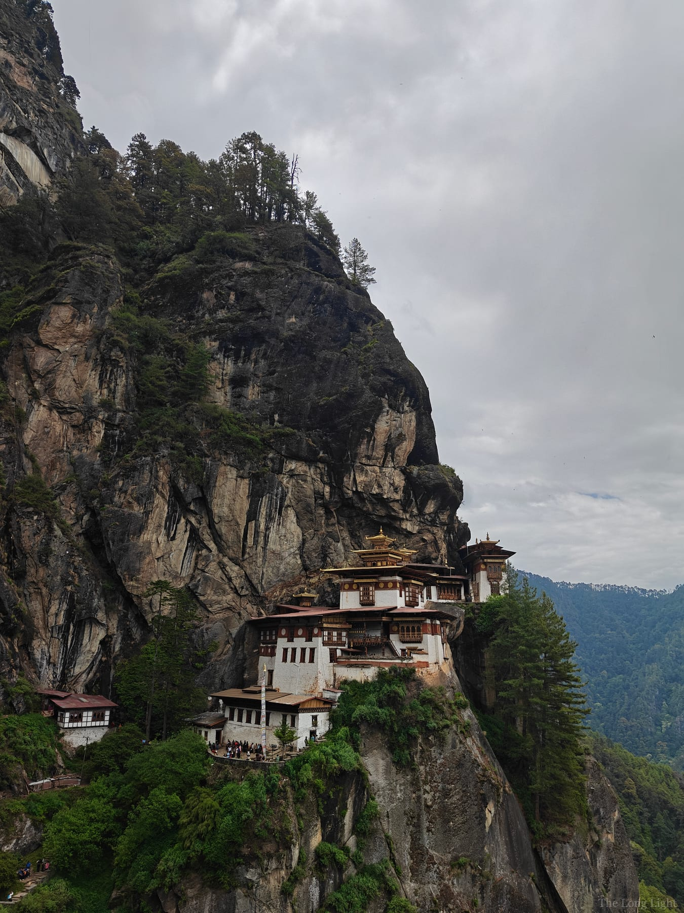

Landscape & street photography
The Long Light
Landscapes, streets, and the hour between.
Advance the reelSelected work
Two disciplines, one eye: the patience of landscape and the instinct of the street, held together by warm light.
No images in this set yet.
About
I chase the same thing in a mountain range and a crowded street: the moment warm light turns an ordinary scene into something you can’t look away from.
I’m Nisargi Shah, and photography is something I do purely for the love of it, usually based around Mumbai, often somewhere further afield. I shoot at the edges of the day, before the sun is up and after it’s gone, where the light does the storytelling for me. Wild places teach me patience; the street keeps me honest and quick.
This is a personal collection, not a business. I don’t take on shoots or commissions, but the frames that mean the most to me, I’m happy to send out as prints, so one of these moments can live on your wall too.
Prints & downloads available
Take a piece of the light home.
If one of these frames stays with you, you can have it. Full-resolution downloads without the watermark are ₹49 each, bought right from the gallery. For prints on paper, write to me and I’ll sort size, stock, and shipping.
Enquire about a print